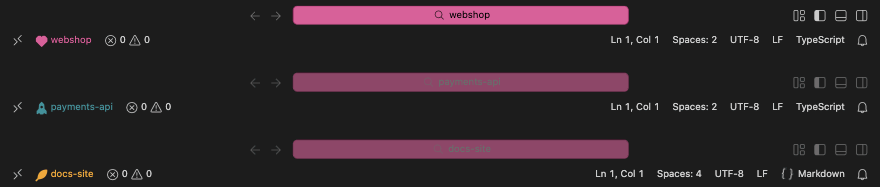
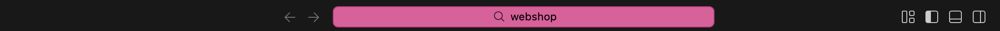
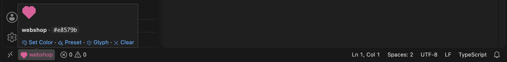
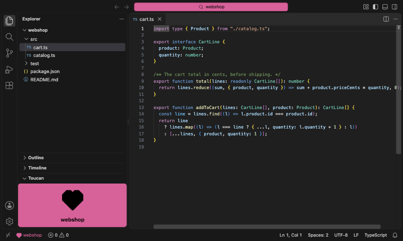
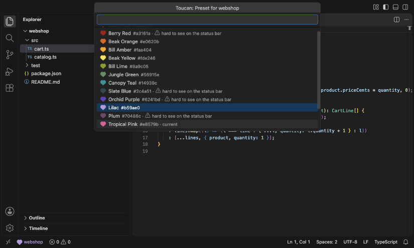
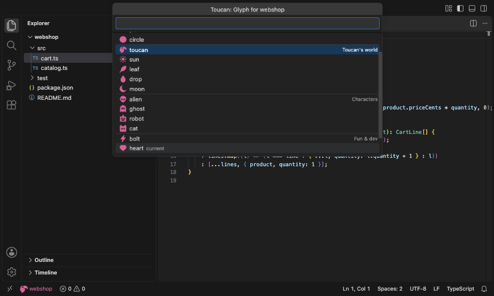
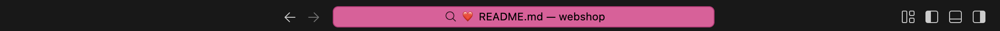

Toucan tints the Command Center, marks the status bar with a glyph and can fill the sidebar, so you always know which window you're typing in.
Open your repos side by side and tell them apart at a glance. The Command Center follows the focused window; the status bar always shows each window's own color.

Pick a color once per repo. Toucan stores it in your settings and repaints every window that opens it.

The search bar at the top takes the repo's color, with a readable text color worked out for you.

A small glyph in the repo's color, from 17 hand-drawn shapes, sits next to the repo name.

Optionally fill the secondary sidebar with the color, full or muted. Toucan only closes a bar it opened.

A toucan-themed palette with a live preview, and a warning when a color is hard to see on the status bar.

Shapes, Toucan's world, characters and fun & dev glyphs, previewed as you move through them.

Experimental: an emoji in the window title, so the repo shows in the Command Center even when it's not focused.
Every glyph is drawn in Toucan's own font, sized for the status bar and readable on dark and light themes.
Sixteen presets taken from the bird's beak, plumage and jungle. Or type any CSS color.
#f92824#a3161a#e0620b#faa404#fde246#8a9c05#56915e#14939c#2c4a51#6241bd#b59ae0#70486c#e8579b#f5a3c7#a7a8b3#101316Pick your editor. Then run Toucan: Set Color from the Command Palette.
For VS Code.
code --install-extension marco-daniel.toucanFor Cursor, VSCodium and Windsurf.
ext install marco-daniel.toucanDownload the .vsix, check its sha256, install from file.
code --install-extension toucan-0.0.4.vsix